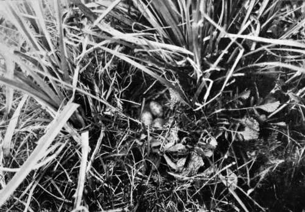
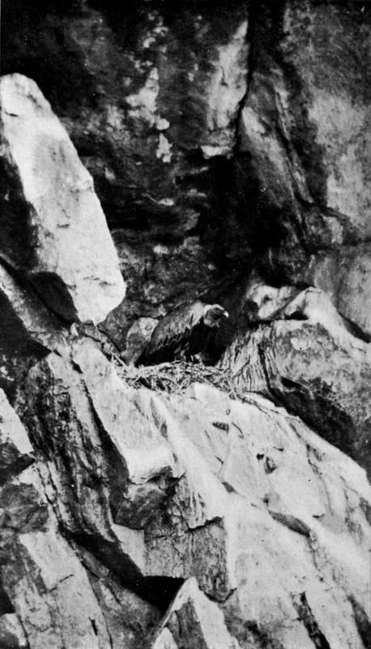
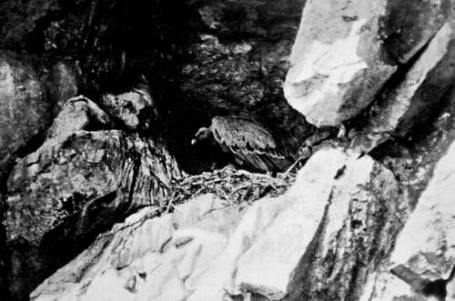

Birds'-Nesting In Spain. Part 4
Description
This section is from the book "Bird-Hunting Through Wild Europe", by R. B. Lodge. Also available from Amazon: Bird-Hunting Through Wild Europe.
Birds'-Nesting In Spain. Part 4
Indeed it was most noticeable that, every time I tried putting out a bait it was invariably discovered by a Griffon before I had finished concealing the camera; and perhaps that is why they refused to approach it. At this place also the Egyptian Vultures settled on the ground close to the bait without touching it.
One day, while wading in the marsh, a large number of Griffons were observed in the air at a little distance : there must have been some hundreds of them. Thinking that a carcase was probably somewhere about, we left our search for Cranes' nests and went off to investigate. Unfortunately, we had noticed the birds just too late, for they had almost demolished the carcase-that of a large pig-and were rapidly departing. By the time I reached the spot there was nothing left but the head, the backbone, and one or two of the legbones, which were picked quite clean and bare. The rest had vanished. Sitting round these scanty remains was a ring of about thirty Griffons. There was a donkey feeding near, and creeping up behind it with the camera I was able to approach near enough to focus the curious scene. I ought, of course, to have exposed one plate before proceeding further ; but, thinking that the birds were gorged and unwilling to fly, I foolishly attempted to get a little nearer. Of course they all rose and flew off, the last to depart being a couple of Marsh Harriers, which were engaged in clearing off the smaller morsels and debris.
We left the automatic camera to look after itself while we went back for dinner, but this only resulted in the photograph of a hungry dog !
Soon after this disappointment we determined to visit the range of cliffs in the distance opposite the house, one high crag in particular looking as if it would be worth a visit.
On reaching the river, which was a fair-sized one, we had some doubts about the whereabouts of the ford, and inquired at a choza, a rude hut of branches, near by. The owner, a typical, sunburnt Andaluz, came out himself, with characteristic politeness, to show us where we could cross.
These Spanish plains in spring-time, before the fierce sun has scorched and burnt everything up, are ablaze with brightly-coloured flowers. Sometimes we waded knee-deep through acres of pink mallows, at other times thousands of blue irises made the prevailing colour blue. Patches of silvery-grey thistles in some places gave a peculiar grey bloom to the landscape. Calandra Larks and Short-toed and Crested Larks rose before us, and on the cultivated cornland we put up several Little Bustards and Quails. The former show a good deal of white on the wing. Nearing the slopes of the hills, brilliantly-plumaged Bee-eaters and Woodchat Shrikes, their red heads shining like blood in the bright sun, sat on the oak- and cork-trees, watching for passing insects.
Nest Of Calandra Lark (Melanocony1tia Calandra)
The base of all these rocky crags is festooned and entwined with clinging, prickly briers, which hold you fast in their embrace and trip up your feet, and do all in their power to obstruct the way ; and after our long tramp with heavy cameras in the broiling heat we were glad enough of a rest in the shade of some cork-trees. Scanning the lofty face of the rock before us, we were delighted to find that in many of the holes and crevices, wherewith the precipice was pitted, Griffon Vultures were sitting motionless on their nests. Dwarfed by their colossal surroundings, these great birds, which have a spread of wing of about ten feet, appeared to be no larger than Starlings. Others soared high overhead, passing and repassing as they circled round the summit of the rock. From below it appeared to be unassailable, but, as we found out later, many of these rocks, which appear so formidable from below, are comparatively easy to climb from the top, even without a rope.
While we were watching with interest the Griffons in their mountain home, a smaller bird, with whitish breast, appeared and settled on a dead tree which projected near the top, and we recognized the noble form of a Bonelli's Eagle. Presently it left its perch and sailed round in front of the great crag. But, though so much smaller, it appeared to disdain the too close propinquity of its larger but more ignoble neighbours ; for, on one of the Griffons venturing too near, it made a most magnificent 1 stoop ' and struck the Vulture with such force that the great bird fairly toppled over, and fell several feet in the air before it could recover itself.
It was a splendid example of natural falconry on a large scale, and reminded us at once of the antagonism and fierce conflicts between the Eagles and the Cinereous Vultures in the forests of Slavonia, so graphically described by the late Crown Prince Rudolf of Austria in his book Sport and Ornithology.
A little to the right of this Griffonry was a gap through which flowed a small, rocky stream, and on the other side of this stream the rocks were much lower. Here, fortunately, we found a Griffon quietly sitting in her nest in a big hole by the side of a half-grown young bird. After a little manoeuvring by climbing up an adjacent hillside so as to clear some trees which obstructed the view from below, I was able to bring the camera and telephoto lens to bear on her at a workable distance. It was really a great stroke of luck to find a Griffon's nest in such an accessible situation, for as a rule they choose a perpendicular precipice of anything over 500 or 600 feet in which to nest. The curious part of it was that so long as I was alone the bird sat quietly on her nest, and I was free to move about in full view of her without disturbing her in the least ; but as soon as M-or the young Spaniard appeared on the scene she flew off, and would not return until they had retired.
Griffon Vulture At Nest (Gyps Fulvus)
Griffon Vulture In Nest (Gyps Fulvus)
Continue to: